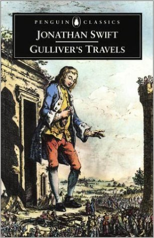
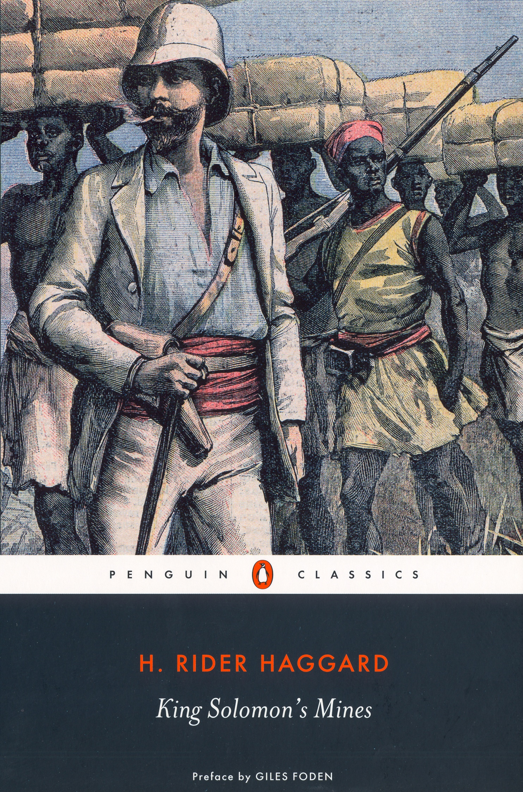

The Odyssey

by Homer
The Odyssey, although it’s an epic poem rather than a novel of course, strikes me as the most fitting way to begin. As an archetype of the adventurer, Odysseus is hard to beat, and his adventures–like all the best adventures–are both literally thrilling, and metaphorically and symbolically full of implication.
Gulliver's Travels

by Jonathan Swift
The adventure novel as social satire. Swift uses the inherited tropes and conventions of the contemporary travel narrative to mock religion, politics, science and human nature in general. Gulliver’s inner journey is from optimism to embittered misanthropy—the more adventures he has the less sanguine he becomes.
Moby-Dick

by Herman Melville
Melville started off writing more straightforward adventure novels set in exotic South Sea locations and featuring alluring and dangerous natives, but then he wrote Moby-Dick, which was much more brilliant and original and much less commercially successful. The basic framework of the adventure novel is still there, but for most of the novel the hazards Ishmael wrestles with are philosophical rather than physical.
Treasure Island

by Robert Louis Stevenson
What better reason could there be for an adventure than the search for buried treasure? All the clichés are here—the treasure map (X marks the spot), the one-legged pirate, the plucky cabin boy, the talking parrot—but they only feel like clichés to us now because Stevenson’s novel, so new and original at the time, has driven them so deep into our collective unconscious.
The Road

by Cormac McCarthy
Cormac McCarthy is a hero of mine. Most of his novels are broadly picaresque–the characters travel through a landscape (always described with extraordinary vividness and originality) and have a series of typically violent or frightening encounters with other people. The Road certainly fits that pattern. It’s a grim post-apocalyptic adventure story complete with cannibals and babies on spits.
The Sheltering Sky

by Paul Bowles
I lived in Egypt for several years in my twenties, and when I read this novel shortly afterwards it struck a chord. It’s about the lure of the exotic, and the unappealing realities which ideas of the exotic can conceal. It’s a highly self-conscious, very modern adventure story in that it explores what we might mean by adventure, and asks why the notion of adventure is so appealing.